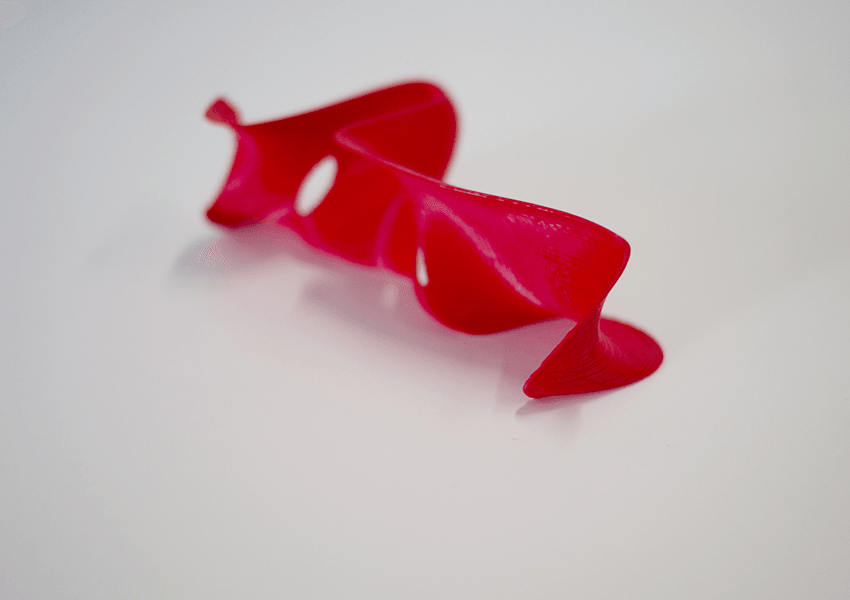

Además — Projet de diplôme
Etude des différentes manières de dire le mot "merci".
Les fréquences sonores de 10 voix ont été modélisées puis ensuite
traduites en volume grâce à l'imprimante 3D.
01/2017
<—